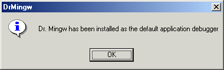
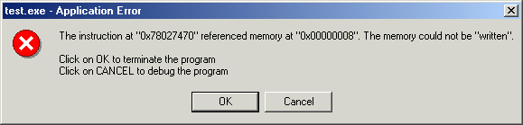

Dr. Mingw is a Just-in-Time (JIT) debugger. When the application throws an unhandled exception, Dr. Mingw attaches itself to the application and collects information about the exception, using the available debugging information.
Dr. Mingw can read debugging information in Stabs formats — generated by the Gnu C/C++ Compiler, and in a PDB file — generated by the Microsoft Visual C++ Compiler.
Windows NT/2000 platform is supported, as well as Windows 95/98. On older Windows versions though, the IMAGEHLP.DLL isn't included or it's a rather old version. Dr. Mingw doesn't require it, but relies upon it to resolve symbols in modules compiled by the Microsoft tools. See The IMAGEHLP.DLL Saga for more information.
Dr. Mingw is now part of mingw-utils.
If you didn't download the self-installing package, to install enter
drmingw -i
Dr. Mingw will register itself as the JIT debugger by writting into the system registry. On Windows NT/2000 make sure you have Administrator rights. See Enabling Just-in-Time (JIT) Debugging for more information.
If the installation is sucessful, the following message box should appear:

To enable other options they must be set them allong with the -i option. For example,
drmingw -i -v
If you still have trouble installing, edit the included drmingw.reg file to reflect the drmingw.exe executable path and load it on the system registry.
You can test Dr. Mingw by running the sample test.exe. Depending of your Windows version, you'll see a familiar dialog:

If you request to debug the program, Dr. Mingw will attach to the faulting application, collect information about the exception, and display the dialog
To resolve the addresses it's necessary to compile the application with debugging information. In case of address is in a DLL with no debugging information, it will resolve to the precedent exported symbol.
The Dr. Mingw command line uses the following syntax:
drmingw [-h | --help] [-V | --version] [-i | --install] [-a | --auto] [-u | --uninstall] [-p pid | --process-id=pid] [-e event | --event=event] [-v | --verbose]
The following table describes the Dr. Mingw command-line options. All comand-line options are case-sensitive.
| Option | Action | |
|---|---|---|
-h |
--help |
Print help and exit |
-V |
--version |
Print version and exit |
-i |
--install |
Install as the default JIT debugger |
-a |
--auto |
Automatically start (used with -i | --install) |
-u |
--uninstall |
Uninstall |
-p pid |
--process-id=pid |
Attach to the process with the given identifier |
-e event |
--event=event |
Signal an event after process is attached |
-v |
--verbose |
Verbose output |
Although internally Dr. Mingw behaves much like a debugger, from the outside it is like a standalone exception handler. But for its own debugging purposes, Dr. Mingw has a internal exception handler that is completly seperate from the main code.
This exception handler resides in exchndl.c. When drmingw.exe is loaded, the code in exchndl.c is automatically executed (by the gcc static constructor/destructor mechanism) and registers itself as a exception handler.
This exception handler is much lighter than Dr. Mingw debugging system because it doesn't have to deal with interprocess communication. The exception handling routine runs in the same process context of the faulting application (drmingw, in this case).
If you incorporate ExcHndl in you own programs, especially those that you release to others, you can have almost the same exception information that you would get with Dr. Mingw, but with no need of the end user to have Dr. Mingw installed.
You can use ExcHndl in two ways:
The latter method is preferred because you have smaller executables and don't need to link the BFD library in all builds. The application wont fail if the EXCHNDL.DLL is missing.
The sample test.exe application uses the second method above. Copy EXCHNDL.DLL to executable directory. When you run it, even before general protection fault dialog box appears, it's written to the test.RPT file a report of the fault.
Here is how test.RPT should look like:
------------------- Error occured on Sunday, May 7, 2000 at 20:22:03. C:\home\jrfonseca\drmingw\src\test.exe caused an Access Violation in module C:\WINDOWS\system32\msvcrt.dll Writing to location 00000008. Registers: eax=00003039 ebx=00000064 ecx=00000008 edx=0244fec0 esi=00401211 edi=0244fec0 eip=78027470 esp=0244fcd8 ebp=0244fea8 iopl=0 nv up ei pl nz na pe nc cs=001b ss=0023 ds=0023 es=0023 fs=0038 gs=0000 efl=00010202 Call stack: 78027470 C:\WINDOWS\system32\msvcrt.dll:78027470 wscanf 7802544B C:\WINDOWS\system32\msvcrt.dll:7802544B sscanf 00401241 C:\home\jrfonseca\drmingw\src\test.exe:00401241 YetAnotherFunction //C/home/jrfonseca/drmingw/src/test.cxx:14 00401272 C:\home\jrfonseca\drmingw\src\test.exe:00401272 MyWonderfulFunction //C/home/jrfonseca/drmingw/src/test.cxx:19 004012A9 C:\home\jrfonseca\drmingw\src\test.exe:004012A9 main //C/home/jrfonseca/drmingw/src/test.cxx:24 004011C1 C:\home\jrfonseca\drmingw\src\test.exe:004011C1 004011EB C:\home\jrfonseca\drmingw\src\test.exe:004011EB 77E87903 C:\WINDOWS\system32\KERNEL32.dll:77E87903 SetUnhandledExceptionFilter
[Taken from Using Microsoft Debuggers of the April 2000 Platform SDK.]
There are a variety of application errors which will cause Windows NT/Windows 2000 a to terminate the application. The most common kinds of errors are deadlocks and access violations. From the operating systems point of view, these are all simply unhandled exceptions.
When an application error occurs, Windows searches for an exception handler. If it does not find an exception handler, the system verifies that the application is not currently being debugged and considers the exception to be unhandled. At this point, there are three possible responses:
The debugging tool which is used to debug the application or write the dump file is called Just-in-Time (JIT) Debugger, or the post-mortem debugger.
The default JIT debugger is Dr. Watson. When the application throws an unhandled exception, Dr. Watson attaches itself to the application and generates a crash dump file. After it creates the crash dump file, Dr. Watson closes the application and exits.
Any user-mode debugging tool can be selected as the JIT debugger:
Only a system administrator can alter the JIT settings.
If a JIT debugger has been installed, you can deliberately break into the debugger from a user-mode application by calling the DebugBreak function.
The Just-in-Time debugging settings are stored in the registry, under \\HKEY_LOCAL_MACHINE\Software\Microsoft\Windows NT\CurrentVersion\AeDebug\. The two relevant keys in this directory are Debugger and Auto.
The Debugger key's value shows the name of the debugger specified to analyze application errors. The Auto key is either zero or one.
When an unhandled application error occurs, Windows checks to see if the Debugger and Auto keys exist.
If the Auto key equals zero and the Debugger value contains the name of a valid debugger (such as WinDbg or NTSD), the message box will have two buttons: OK and Cancel. If the OK button is pressed, the application is terminated. If the Cancel button is pressed, the debugger specified in the Debugger key is started.
If the Auto key equals zero, but the Debugger key value is empty, the message box will have only an OK button and no debugger will start.
If the Auto key equals one, no message box appears. The debugger referred to in the Debugger key is automatically started.
Setting Dr. Watson as the JIT debugger (default):
Debugger = "drwtsn32 -p %ld -e %ld -g" Auto = 1
Setting WinDbg as the JIT debugger:
Debugger = "WinDbg -p %ld -e %ld" Auto = 1
Setting NTSD as the JIT debugger:
Debugger = "NTSD -p %ld -e %ld -g" Auto = 1
In these examples, -p %ld specifies the process ID that NTSD will debug, -e %ld provides the event that caused the exception, and -g causes the debugger to skip the initial breakpoint. (Dr. Watson ignores the -g option.)
[Taken from several Bugslayer articles of MSJ.]
The IMAGEHLP.DLL symbol engine first appeared in Windows NT® 4.0. The beta Windows NT 5.0 SDK had new parts of IMAGEHLP.H that dealt with source and line information. In the meantime, the November 1998 Platform SDK showed and the IMAGEHLP.DLL that shipped with it supported the new source and line handling. There are several different versions of IMAGEHLP.DLL. The only one that does not support the new source and line information is the original Windows NT 4.0 version.
The IMAGEHLP.DLL version 5.00.1678.1 dynamically links to MSPDB50.DLL. It first tries to load MSDBI.DLL, and if that is not found it will load MSPDB50.DLL, so it works with both Visual C++® 5.0 and 6.0. To use it with Visual C++ 6.0, copy MSPDB50.DLL to MSPDB60.DLL. If you want to get symbols from the field, you will have to compile with CodeView® symbols and use .DBG files to get them. Keep in mind that MSPDB50.DLL, like MSDBI.DLL, is not redistributable.
The IMAGEHLP.DLL version 5.00.1878.1, which comes with the Windows 2000 Beta 2 Platform SDK, hard links against MSDBI.DLL instead of dynamically loading MSPDB50.DLL as in earlier versions to read PDB files. The problem is that MSDBI.DLL is not redistributable.
IMAGEHLP.DLL now uses DEBUGHLP.DLL.
If you want IMAGEHLP.DLL, it's available in: